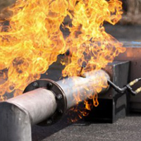

1. Oskrba z zemeljskim plinom v Evropi in Sloveniji
Razvejanost zemeljskega plina v letu 2007
Vir: E.ON Ruhrgas

Pregled koncesij zemeljskega plina v Sloveniji v letu 2013
Vir: GIZ DZP
Zemeljski plin je fosilno gorivo, ki ga uporablja iz dneva v dan več odjemalcev. Razširjenost omrežja v Sloveniji in Evropi, predvsem pa načrti za širitev omrežja v prihodnje napeljujejo na to, da bo v prihodnje uporabljan še bolj in na več področjih. Tako ga že danes poleg kuhanja in ogrevanja s koristjo uporabljamo za gorivo za prevozna sredstva, soproizvodnjo toplote in elektrike, najavljajo se še mnoge tehnologije, ki ga bodo v prihodnosti uporabljale. Pomembno je predvsem dejstvo, da ga je v naravi v izobilju. Pred kratkim so razvili tehnologijo luščenja zemeljskega plina iz plasti skrilavcev, kar je zelo povečalo predvidene zaloge. Pomembno je, da ga narava vseskozi proizvaja in da lahko pri zemeljskem plinu govorimo o obnovljivem viru. Prav z vidika uporabnosti danes in v prihodnje moramo poskrbeti za varnost. Prav tako je pomembno, da gasilci v primeru nesreč pri rabi zemeljskega plina poznamo njegove lastnosti, nevarnosti in da poznamo pravilne postopke ob intervencijah, povezanih s tovrstnimi nesrečami.
2. Osnovna tehnika plinskih naprav in napeljav
Zemeljski plin pride do končnega uporabnika v več fazah. Od območja, kjer je proizveden, potuje po plinskih daljnovodih, ki so zgrajeni iz jekla. V njih je plin pod visokim pritiskom, praviloma do 80 barov. Nato tlak v reducirnih postajah zmanjšamo do 16 barov in ga vodimo po transportnem omrežju do distribucijskih merilno-regulacijskih naprav. Tam se tlak zmanjša do pet barov, nato ga vodimo do končnih porabnikov. Ti plinovodi so bili nekoč grajeni iz jekla, danes se uporabljajo večinoma razvodna omrežja iz polietilenskih (PE) materialov, spoji pa se izvajajo s posebnimi postopki varjenja z uporovnimi objemkami. Postopek se je izkazal za zelo zanesljiv in trajen. Morebitne poškodbe omrežja se zgodijo izključno zaradi zunanjih vplivov. Pred vstopom v objekt je treba tlak plina še dodatno znižati, saj porabniki delujejo na tlakih do maksimalno 100 milibarov. Vsak objekt, ki ima plinsko inštalacijo, mora imeti na vidnem mestu plinsko požarno pipo, ki mora biti primerno zaščitena in zavarovana. Po navadi je v pločevinasti omarici, ki se lahko preprosto ob kakršnikoli potrebi odpre. Takoj za vstopom v objekt in pred trošili so plinomeri, ki so namenjeni za odčitavanje porabe. Razvod znotraj objekta se izvede z različnimi materiali, nekoč z izključno varjeno spojenimi jeklenimi cevmi, danes pa z bakrom, nerjavnimi inštalacijami, ki so spojene na stisk, pa tudi s sodobnimi cevmi iz PE-materialov. Vse inštalacije morajo biti narejene pri pooblaščenih izvajalcih tako, kot to določa nemško združenje DVGW v svojem delovnem zvezku G600 TRGI-2008. Pomembno je, da je pred vsakim trošilom obvezno izveden zaporni organ primerne kakovosti, ki mora vsebovati termični element, katerega lastnost je, da pri povečani temperaturi okolice nepovratno zapre plinsko inštalacijo za najmanj 90 minut. Ta ukrep je potreben, da ob morebitnem požaru plinska inštalacija ne predstavlja dodatne nevarnosti.
3. Sestava in lastnosti zemeljskega plina
Sestavljen je iz:
- Metan 80 do 99 volumskih odstotkov
- Etan < 12 volumskih odstotkov
- Propan < 4 volumske odstotke
- Butan < 1 volumski odstotek
- Pentan < 0,5 volumskega odstotka
- Dušik < 15 volumskih odstotkov
- CO2 < 6 volumskih odstotkov
Je:
- brezbarven
- nestrupen
- v naravi ter distribucijskih in transportnih omrežjih brez vonja, vonj dodajo v razvodnih omrežjih proti končnim porabnikom zaradi varnosti – tipičen vonj v primeru morebitnih uhajanj (lažja zaznava plina – voh)
- vzgonski, lažji od zraka, razmerje zemeljski plin–zrak približno 0,6
- gorljiv in eksploziven v območju mešanja z zrakom 4–17 volumskih odstotkov
Za zemeljski plin ima značilen nevarnostni kvadrat, sestavljen iz gorljive snovi (zemeljski plin), zraka (O2), vira vžiga in mešalnega razmerja. V primeru vzpostavitve le-tega govorimo o vžigu, eksploziji in vzbuhu. Če zemeljski plin iz zaprtega prostora izrine kisik pod mejo 15 odstotkov, se lahko zadušimo.
4. Varnost pri distribuciji zemeljskega plina
Varnost pri distribuciji zemeljskega plina delimo na ukrepe, ki se opravljajo ob izvedbi. Govorimo predvsem o kvalitetnem in strokovnem načrtovanju plinovodnega omrežja, izvedbi po minimalnih tehničnih kriterijih, ki zagotavljajo najvišjo možno varnost uporabe, in zadovoljivem nadzoru v vseh izvedbenih fazah. Plinovodi morajo v določenih segmentih vsebovati vse varnostne elemente, ki preprečujejo kasnejše fizične poškodbe v primeru posegov v bližini omrežja. Opremljeni morajo biti s segmentnimi zapornimi in odzračnimi elementi, s katerimi lahko omejimo oziroma prekinemo dotok plina v posamezne dele omrežja. Ves plin, namenjen za gospodinjsko uporabo, mora biti opremljen z vonjem, ki ga zazna uporabnik v nenevarnih količinah puščanja, in tako pravočasno odreagira. Na plinovodnem omrežju se morajo opravljati periodični pregled plinovoda in občasni tlačni in testni preizkusi, ki jih opravlja pooblaščeno podjetje, vsi uporabniki pa morajo biti seznanjeni s pravilno uporabo svojega sekundarnega omrežja. Zakon določa, da je za plinovodno omrežje za glavno požarno pipo odgovoren izključno uporabnik – lastnik. Odgovarja tudi za vso morebitno škodo, ki bi nastala zaradi nepravilne uporabe ali kakršnihkoli drugih vzrokov, povezanih s plinovodnim omrežjem. Statistika nesreč neusmiljeno kaže na to, da je najbolj pogost vzrok za nesreče prav uporabnik z nepooblaščenimi posegi v omrežje, uporabnik in izvajalec inštalacij zaradi tehničnih pomanjkljivosti in uporabnik zaradi neizvedenih ukrepov, povezanih z vzdrževanjem. Tovrstne nezgode je treba preprečevati z zadostnim izobraževanjem izvajalcev inštalacij in z ozaveščanjem uporabnikov. Seveda pa je pomembno, da pred prvim spuščanjem plina v sistem to preveri strokovnjak, pooblaščen od sistemskega operaterja lokalnega omrežja. Prav tako je treba voditi evidenco posegov in periodičnih pregledov plinovodne inštalacije.
5. Postopki pri nesrečah na napravah in inštalacijah zemeljskega plina
Nesreče, povezane z zemeljskim plinom, delimo na več kategorij.
a) Požar v objektu, priključenem na plinovodno omrežje, vendar brez puščanja plina. Postopek:
- zapremo glavni plinski ventil
- obvestimo upravljavca plinovodnega omrežja
- rešimo ponesrečence, pogasimo požar
- upoštevamo navodila upravljavca plinovodnega omrežja
b) Požar uhajajočega plina znotraj objekta:
- obvestimo upravljavca plinovodnega omrežja
- zapremo glavni plinski ventil
- ne gasimo – izjemoma z namenom reševanja življenja
- upoštevamo navodila upravljavca plinovodnega omrežja
c) Uhajanje plina znotraj objekta, brez ognja ali eksplozije:
- obvestimo upravljavca plinovodnega omrežja
- zapremo glavni plinski ventil
- stavbo evakuiramo
- omejimo dostop v območju uhajanja
- stavbo navzkrižno prezračimo, pazimo na morebitne žepe
- preverjamo koncentracijo plina
- odstranimo in preprečimo vse morebitne vire vžiga
- če je mogoče, izklopimo električno omrežje
- upoštevamo navodila upravljavca plinovodnega omrežja
d) Vžig plina, ki uhaja na prostem:
- obvestimo upravljavca plinovodnega omrežja
- omejimo dostop do mesta nesreče
- ogrožene objekte varujemo in hladimo
- ne gasimo, razen če je ogroženo življenje
- upoštevamo navodila upravljavca plinovodnega omrežja
e) Uhajanje plina na prostem brez ognja:
- obvestimo upravljavca plinovodnega omrežja
- vse vire vžiga odstranimo
- območje nevarnosti zavarujemo in označimo
- evakuiramo ljudi iz objekta
- opazujemo morebitne plinske žepe
- preprečimo vdor plina znotraj objektov
- upoštevamo navodila upravljavca plinovodnega omrežja
Ponovitev najbolj pomembnih ukrepov:
- obvestimo upravljavca plinovodnega omrežja preko centra za obveščanje
- zapremo plinski ventil:
> glavni ventil na objektu, če je to mogoče
> ventil, ki zapira ogroženo območje
> ventile, ki so na distribucijskem omrežju lahko zapira le upravljavec
- zaprtih ventilov ne smemo odpirati
- gorljivega plina ne gasimo, ker lahko nastane eksplozija – izjema je le reševanje človekovega življenja, vendar moramo upoštevati vse možnosti za preprečitev ponovnega vžiga